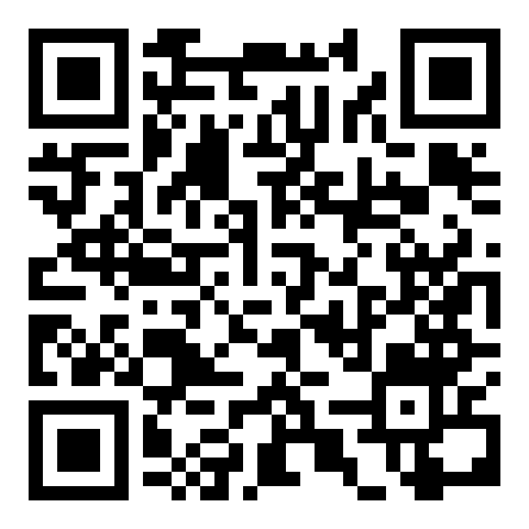

QR security demo · Demo C
Scan this code and keep the page open. It points somewhere harmless right now — watch what happens when I flip it.

The QR encodes one stable URL that never changes. What changes is the destination behind it, flipped server-side after you've already inspected and trusted the code. Nothing here is malicious — every destination is the speaker's own domain.
Awareness / education material